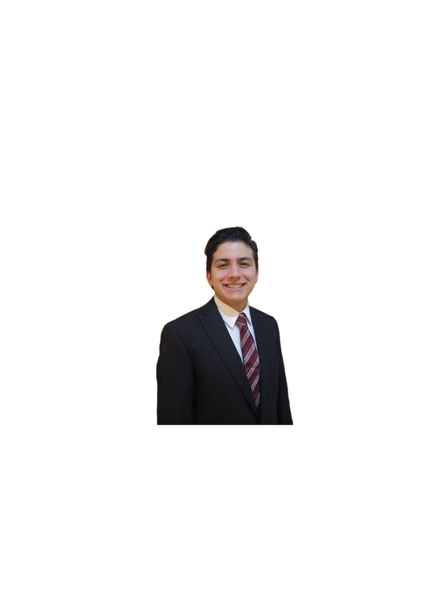

CURRICULUM EN HTML
Nombre:
Enrique Ulises Báez Gómez Tagle
Edad:
18 años
Título:
Ingeniero de Inteligencia de Datos y Ciberseguridad en la Universidad Panamericana
Datos de contacto:
Enviar correo 0241823@up.edu.mx
Último grado de estudios:
Doctorado en Ingeniería de Datos y Ciberseguridad
Experiencia laboral:
CEO at Kikin Acedemy
Cybersecurity Director
Proyectos personales importanes:
-
- KIKINACADEMY: Fundador y Director. Sitio para aprender sobre programación y
matemáticas, así como para clases sobre estas materias.
-
- AIR2D2: Fundador. Diseño, construcción y programación de un dron con control
PID y reconocimiento de rostros.
-
- Apps Thinking Tank: Ganador. Propuesta de una aplicación para negocios en
pandemia (UI, UX)
-
- Aprendiz de Python: Ganador. Desarrollo de un videojuego.
-
- Electri-k: Participante. Diseño y construcción de prototipo para un auto eléctrico.
-
- Electri-k: Participante. Diseño y construcción de prototipo para un auto eléctrico.
-
- Sphero Reto: Participante. Curso de programación para Sphero.
-
- Google Cloud Computing Foundations. Participante. Curso sobre Cloud Computing.
-
- Dale Carnegie México: Participante. Curso de oratoria y persuasión.
-
- PIAG3DT: Fundador. Sitio Web con recorrido virtual para preparatoria.
-
- PANDEMOTIONS: Fundador. Análisis estadístico y psicológico sobre la pandemia.
-
- PROTESIS EN EL DEPORTE: Fundador. Análisis médico, estadístico y psicológico
sobre las prótesis usadas en el deporte (CASO: Oscar Pistorius).
Habilidades y conocimientos:
| PYTHON |
SQL |
C# |
C++ |
HTML |
GIT |
CSS |
R |
Matemáticas |
Estadística |
| Modelado 3D |
Liderazgo |
Trabajo en equipo |
Adaptación |
Responsabilidad |
Inglés |
Innovación |
Perseverancia |
Persuasión |
Pensamiento crítico |
